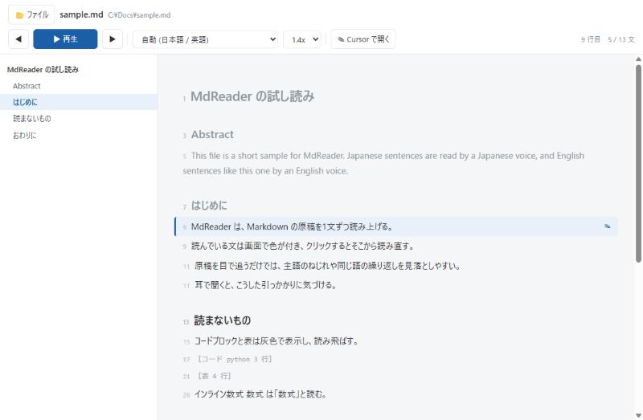

音声は Microsoft Edge の読み上げ (edge-tts) を使うので、API キーは要りません。つながらないときは Windows 標準の音声に切り替わります。 Cursor (VS Code) の中で完結させたい人向けに、拡張版も用意しました。
ソースを見る (GitHub) Cursor 拡張 (mdreader-0.1.0.vsix) 試し読み用の sample.md

動く環境
- Windows 10 / 11 (ほかの OS でも動きますが、音声の切り替えと起動用の bat は Windows 向けです)
- Python 3.10 以上と、
pip install edge-tts fastapi uvicorn - Cursor (
cursorコマンドが PATH にあること。なければcodeを使います)
起動
src の中身を1つのフォルダに置き、MdReader.bat に Markdown ファイルをドロップします。
1回目はサーバが最小化された状態で立ち上がり、ブラウザが開きます。2回目からのドロップは、開いているタブがそのファイルに切り替わります。
python server.py path\to\paper.md引数なしで起動するとファイル選択の画面が出ます。終わるときは、最小化されているコンソールを閉じます。
使い方
| 操作 | キー |
|---|---|
| 再生 / 一時停止 | Space |
| 次の文 / 前の文 | → ← (または j k) |
| いま読んでいる行を Cursor で開く | E |
| ファイルを開く | O |
本文の文をクリックすると、そこから読み直します。左の目次で節へ飛べます。速度は 0.8〜2.0 倍で、ピッチは変わりません。 Cursor で保存すると自動で読み込み直し、同じ文から続きを読みます。
何を読み、何を飛ばすか
| 要素 | 扱い |
|---|---|
| 見出し・段落・箇条書き・引用 | 読む (記号は除く) |
| コードブロック・表・数式ブロック・フロントマター | 飛ばす (灰色で表示) |
リンク、Obsidian の [[note|alias]] | 表示テキストだけ読む |
インライン数式 $x$ | “数式”と読む |
.tex もそのまま開けます。% のコメント行、プリアンブル、figure や table の環境、\ref や \cite は飛ばし、\caption と本文だけを読みます。
文は句点で区切り、150字を超えるときは読点でさらに割ります。どの文も元のファイルの行範囲を持っているので、ハイライトとエディタの行がずれません。
声の選び方
日本語の原稿でも、Abstract や図のキャプションは英語で書くことが多いものです。既定の“自動”では文ごとに日本語の文字を含むかを見て、日本語の声と英語の声を切り替えます。 一覧から特定の声を選べば、常にその声で読みます。
音声合成が止まったとき
edge-tts は Edge の読み上げを使う非公式のクライアントなので、オフラインや仕様変更で止まることがあります。そのときは Windows 標準の SAPI に自動で切り替わり、画面の右上に注意が出ます。
一度失敗すると、120秒は edge-tts を試しません。環境変数 MDREADER_TTS=sapi で、はじめから SAPI に固定できます。
Cursor 拡張
拡張機能の画面で “VSIX からインストール” を選び、mdreader-0.1.0.vsix を指定します。サーバは拡張が自分で起動します (Python と上記のライブラリは必要です)。
拡張版は保存前の編集もそのまま読み、読んでいる文にエディタのカーソルが乗ります。
| 操作 | キー |
|---|---|
| 再生 / 一時停止 | Ctrl+Alt+Space |
| 次の文 / 前の文 | Ctrl+Alt+] / Ctrl+Alt+[ |
| カーソル位置から読む | Ctrl+Alt+Enter |
外に送るもの
読み上げる文は、音声合成のために Microsoft の読み上げサービスへ送られます。外に出せない原稿は、MDREADER_TTS=sapi で Windows 内だけで読ませてください。
ファイル
| ファイル | 内容 |
|---|---|
server.py | FastAPI のサーバ。解析、音声合成 (ハッシュでキャッシュ)、エディタを開く処理 |
mdparse.py | Markdown と LaTeX を行番号付きの読み上げ単位に分ける |
static/index.html | 再生・ハイライト・目次・ファイル監視の画面 |
MdReader.bat、launcher.py | ドロップの受け口。サーバが動いていればタブを切り替える |
cursor-extension/ | Cursor 拡張のソース。npm run package で vsix を作る |
test_*.py | 音声合成の切り替えと話者一覧の確認 |
ライセンスは The Unlicense です。自由に使い、直し、配ってかまいません。無保証で、使って生じた損害は補償しません。